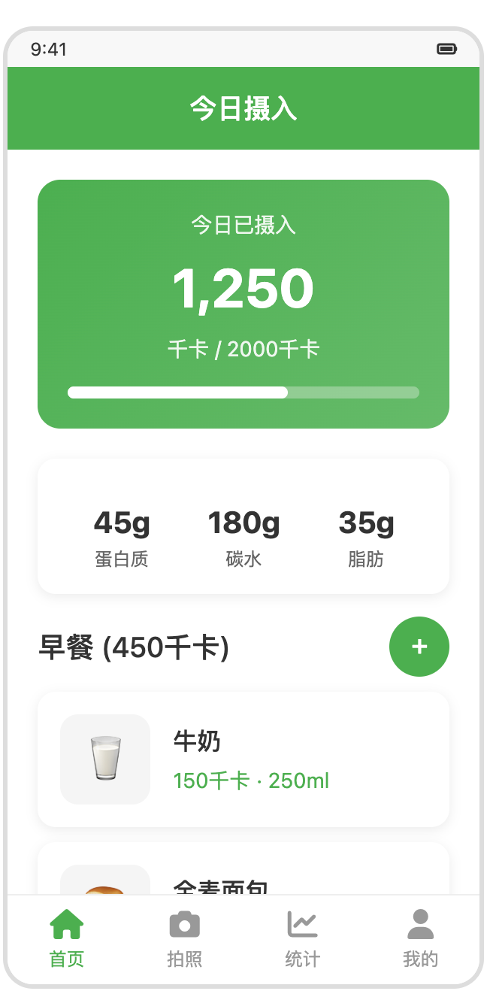
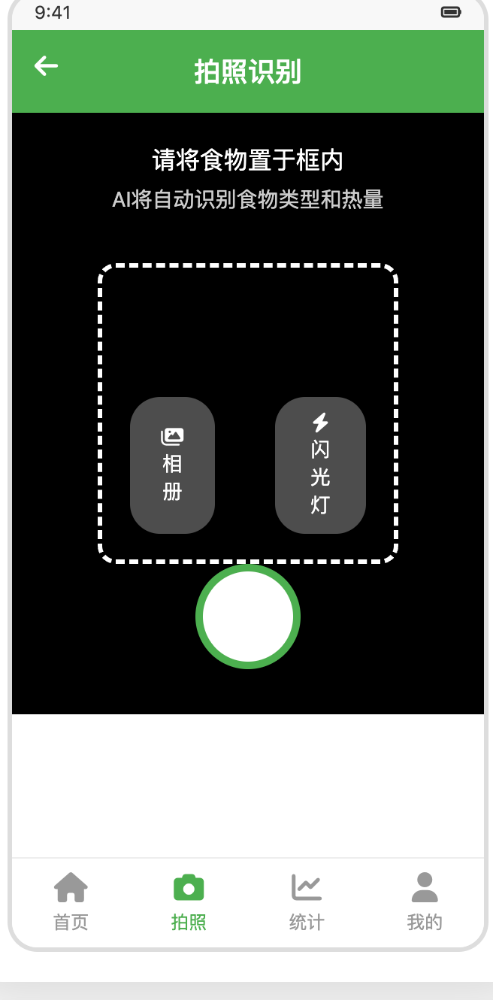
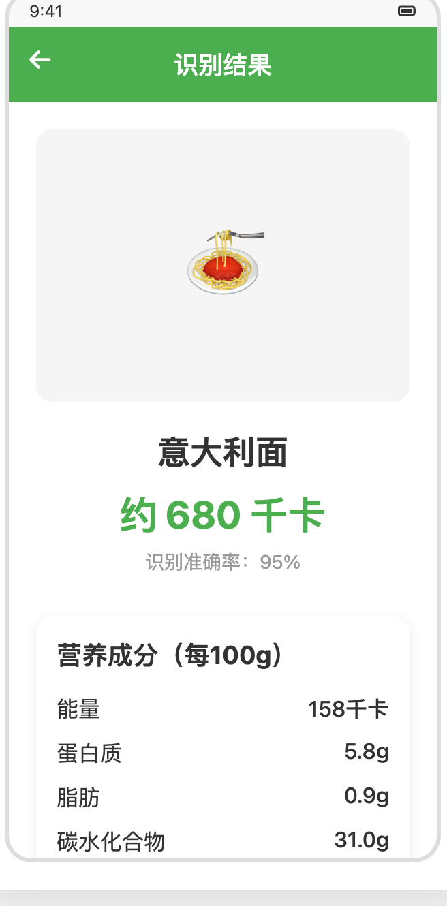
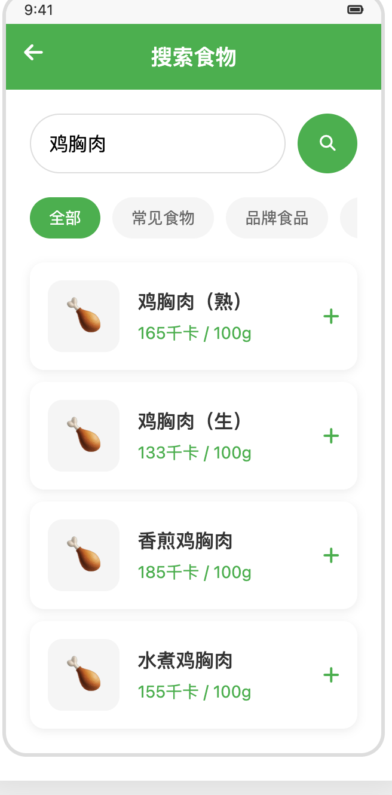
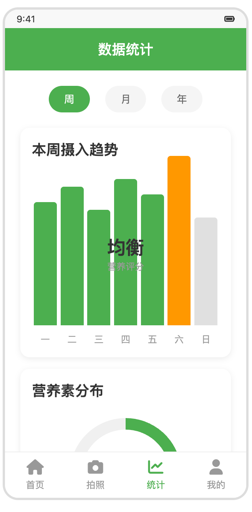
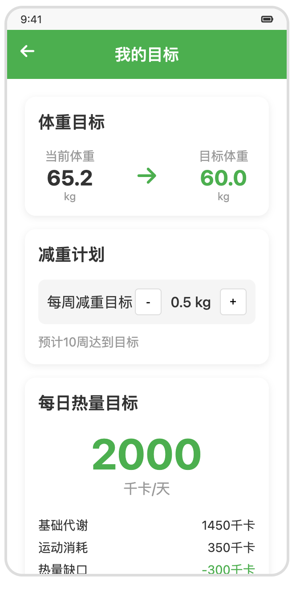

拍照记录饮食，营养目标更清楚
拍一张照片，AI 立即估算卡路里、蛋白质、碳水和脂肪，并帮你追踪饮水、体重与每日目标。
- 📷 拍照即识别
- 🥗 全营养追踪
- 🌏 中英双语
三步记录一餐
拍照、识别、追踪——把复杂的营养记录变简单。
拍照记录餐食
对准食物拍一张，或从相册选择、手动搜索——想怎么记都可以。
AI 识别营养
AI 自动识别食物，估算卡路里以及蛋白质、碳水和脂肪，减少手动输入。
追踪目标与趋势
对照每日目标查看进度，追踪饮水、体重与营养趋势，坚持得更久。
亲手试试识别的感觉
点一个示例餐食，看看 AI 识别结果长什么样。
示例估算——App 内数值以你的照片为准。
核心功能
为“少输入、看得懂、能坚持”而设计。
AI 食物识别
拍照识别餐食并估算卡路里与主要营养成分，几秒完成一次记录。
宏量营养追踪
记录蛋白质、碳水、脂肪与热量摄入，让每日饮食结构一目了然。
个性化目标
依据年龄、性别与活动水平设定每日热量目标，贴近你的真实状态。
饮水与体重
记录每日饮水、BMI 与体重趋势，把健康管理放进同一个闭环。
趋势与统计
用周、月视图查看摄入趋势和营养素分布，随时调整饮食计划。
本地优先与隐私
记录数据以本地存储为先，仅在识别时联网分析，隐私始终由你掌握。
适合这样的你
不同的目标，同一个更省力的记录方式。
减脂新手
总在猜一顿饭有多少热量？
拍一张，数字立刻有。
健身增肌党
蛋白质够不够，每天手算太累。
三大营养素自动估算，达标一眼看清。
忙碌上班族
一忙起来，记录总是坚持不下来。
电梯里就能记完一顿午餐。
习惯养成者
饮水、体重、三餐分散在不同 App。
一个闭环，每天顺手完成。
应用界面
左右滑动，点击任意截图可放大查看。






从照片到营养素
一张照片如何变成卡路里与三大营养素——原理与边界都说清楚。
是估算不是化验——一键即可修正。
相册照片、手动搜索同样可用。
只有识别这一步需要联网。
你的饮食数据，尽在掌握
记录以本地存储为先，仅在拍照识别时联网分析。没有广告、不做用户追踪。
- 数据本地优先
- 仅识别时联网
- 无用户追踪
- 无广告干扰
为什么拍照，而不是手输
不点名对比——只对比记录一顿饭要花的功夫。
| 对比项 | AI卡路里 | 手动记录 App | 笔记和表格 |
|---|---|---|---|
| 记录一顿饭 | 拍一张 | 逐项搜索 | 全部手输 |
| 蛋白质 · 碳水 · 脂肪 | 自动估算 | 手动查表 | 自己计算 |
| 饮水体重同一 App | 内置 | 视应用而定 | |
| 广告与追踪 | 无 | 视应用而定 | |
| EN / 中文 双语 | 内置 | 视应用而定 |
常见问题
AI 食物识别需要联网吗？
拍照识别由 AI 完成，需要联网上传照片进行分析；识别之外的记录浏览与数据查看均可在设备本地进行。
支持哪些设备和系统？
支持 iPhone 与 iPad，建议使用较新的 iOS / iPadOS 版本以获得完整体验。
可以追踪哪些营养数据？
可追踪卡路里、蛋白质、碳水化合物、脂肪，以及每日饮水、BMI 和体重趋势。
除了拍照还能怎样添加食物？
除拍照识别外，还支持从相册选择照片、搜索食物库以及手动输入，随时快速记录。
支持中英双语吗？是否收费？
界面支持简体中文与英文双语，App 可免费下载使用。
立即下载 Food Calories
拍一张照片，开始更清楚的营养管理。
免费下载 · 支持 iPhone 与 iPad